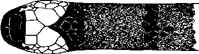

|
Digitized Inventory of Animal Resources: Reptilia ( Snakes ) Principal Investigator: Dr. R. J. B Alfred, Co-Investigator: Dr. Rama Krishna, Contributed by:
Dr. R.C.Sharma |
Callophis macclellandi (Reinhardt 1844)
Taxonomic
Details
----- Scientific Name
----- Classification
----- Synonyms
----- Common Names
Other
Biological Details
----- Habit and
Habitat
----- Distribution
---------- Extent of
Occurrence
---------- Area of occurrence
---------- Altitude
---------- Population
-----
Conservation Status
-----
Diagnostic
Features
-----
Breeding system
Miscellaneous
Information
Literature
coral snakes
Genus . Callophis Gray 1834
This genus includes the poisonous snakes popularly known as coral snakes, with cylindrical, elongated body, of almost equal diameter from head to anus; head not distinct from neck; head shields normal; loreal shield is not present; nostril is pierced between the two nasals; eyes are of small to moderate size, with round pupil; maxillary bone extends sufficiently beyond the palatine; poison fangs followed after an interval by from 0-5 small solid teeth; body scales are smooth, subequal, in 13 or 15 rows throughout; tail short, subcaudals are paired except in Callophis macclellandi. This genus is closely allied to Bungarus; more than 13 species are known from India; Vietnam, China, Japan and Philippines.
Habits : Nocturnal; timid in disposition; "often found by day half buried in the earth beneath fallen timber, or among leaves. Their main food appears to be snakes" (Malcolm A. Smith, 1943. p. 419).
Scientific Name : Callophis macclellandi (Reinhardt 1844)
Family :
Elapidae
Classification:
Genus . Callophis Gray 1834
Synonyms:
Common Names: macclellandi
coral snake
Distribution: The
Forma typica occurs from the Himalayas as far west as Kasauli, through Nepal,
Sikkim, Assam and Burma to Southern China and Taiwan. Ranges of the other
varieties as given under 'Color' above.
Altitude:
It
is a hill species, found between 3000 to 6000 feet altitude with forests. It is
a most docile snake and absolutely inoffensive. The main food comprises the
snakes of all forms which it can overpower. The breeding season is from July to
November and it lays 6-14 eggs in a single clutch. It is a most beautiful snake.
Conservation status: Fairly Common
Length : Total length in males 635 mm., tail 70 mm. and in females 780 mm., tail 60 mm.
Body : Hemipenis extends up to the 6-8th caudal plate, forked near the tip; complete organ bears spines and is calyculate; the spines are short, set on the margins of the calyces and of almost equal size, except near the tip, where they are smaller.
Scales : Scales in 13 rows throughout. Ventrals 182-244. Subcaudals 20-36, paired or rarely some of them unpaired. Anals 2.
Colouration : Wall 1928, p. 32) recognises five color varieties. In all of them the head is black above, except for a broad white transverse bar behind the eye, and the belly is pale or sulphur yellow, spotted or banded. In the Forma typica, which is widely distributed, see distribution, 16-26 narrow black bands completely or incompletely encircle the body, there being 3-4 such bands on the tail. In univirgatus, found in the eastern Himalayas (Nepal and the vicinity of Darjeeling) there is a black streak running down the spend and 23-32 transverse bars on the sides of the body, the latter sometimes absent. In gorei, collected from Jeypore (Assam), the Naga Hills and Manipur, no vertebral stripe and black bars are present, but there are about 30 small black, spots along the spine. In nigriventer, from Kasauli, a broad black stripe runs continuously along the middle of the body and there are three rings on the tail.
Breeding Biology :The breeding season is from July to November and it lays 6-14 eggs in a single clutch. It is a most beautiful snake.

Callophis macclellandi (Reinhardt) :
Dorsal pattern of head and neck